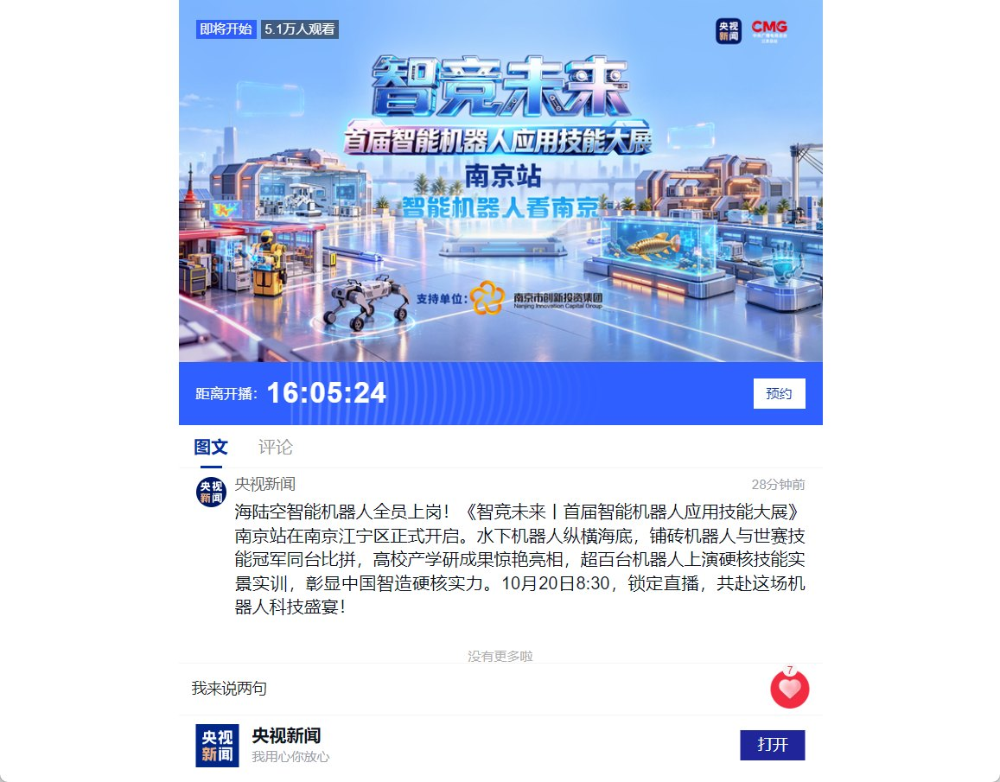

科技品牌运营与直播专项
天路飞行汽车
日常内容与专项传播
服务天路飞行汽车客户，负责日常账号运营和策划，参与央视新闻网络直播的客户方专项内容策划。
- 客户账号内容与策划
- 日常运营
- 客户方内容策划
- 专项直播
- 产品与品牌价值传播
- 科技品牌

日常运营与客户策划
围绕科技产品与品牌信息组织内容，参与账号运营和内容策划，让技术特点与用户关心的场景建立联系。
央视新闻网络直播客户方策划
参与《天路登陆 智竞未来》网络直播的客户方专项内容策划，配合传播节点组织品牌内容。

所示为10月20日网络直播的品牌海报与总活动预告资料。